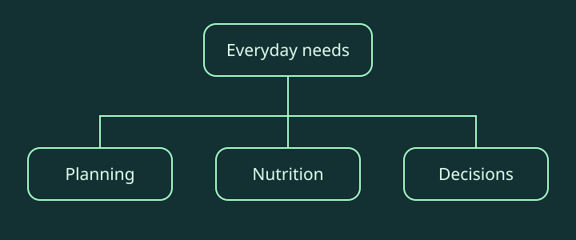

AIVA · Group concept poster
The initial team concept: user needs, core features and the assistant experience.
CPT208 · Interaction design · Group concept / individual design
01 · Problem & goal
Make planning, nutrition and everyday decisions easier through a coherent personal-assistant interface.
02 · My contribution
I was responsible for Figma page implementation and the overall poster framework. My individual presentation develops the group concept into specific screen flows and documents successive interface revisions.
03 · Implementation approach
Start from everyday planning and decision needs, organize the proposed features, then develop interface prototypes and explain the intended interactions in a design presentation. The group concept and individual design development are identified separately.
| Initial issue | Design change | Purpose |
|---|---|---|
| Login and entry screens did not establish the assistant identity | Added a butler-led entry flow and simplified repeated actions | Make onboarding and the assistant’s role clearer |
| Avatar and wake-word settings were mixed together | Separated the customization flow and introduced image-style selection | Make personalization easier to understand |
| Fixed feature sections offered limited personalization | Introduced guided questions and configurable sections | Connect the interface to individual routines |
| Nutrition advice named nutrients without specific meals | Added concrete food recommendations | Turn abstract advice into an actionable choice |
| A separate learning timetable duplicated scheduling | Omitted the overlapping page | Reduce duplication between features |
04 · Results & reflection
An interface-design portfolio and demonstration. This is a design concept, not evidence of a deployed AI assistant.
05 · Demonstration & visuals


06 · Source & project materials
The initial team concept: user needs, core features and the assistant experience.
Inspect the interface development and iterations alongside the improvements summarized above.
Original reports and source materials support the summary above. Team contributions and validation limits are stated on this page.